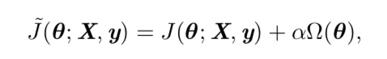

机器学习不止要求在训练数据上有良好的表现，还希望有较好的泛化能力，即在测试数据上也能减少测试误差。这些策略被统称为正则化
常见的一些正则化方法：
1.参数范数惩罚
即在原有的优化函数中，添加一个对参数的惩罚，来限制模型的学习能力

(1) L2参数正则化
L2正则化/岭回归，又叫权重衰减； 可以参照岭回归
(X⊤X + αI)−1 这个新矩阵与原来的是一样的，不同的仅仅是在对 角加了 α。这个矩阵的对角项对应每个输入特征的方差。我们可以看到，L2正则化能 让学习算法 ‘‘感知’’ 到具有较高方差的输入 x，因此与输出目标的协方差较小(相对 增加方差)的特征的权重将会收缩。
（2）L1正则化： 具有稀疏性，很多会衰减成0，所以有时候会用来做变量选择lasso
2.作为约束的范数惩罚
从另一个角度来看这个问题，可以被看做是构造一个广义拉格朗日函数来最小化带约束的函数


最小化约束 + 重投影的角度
3.正则化和欠约束问题
正则化还有个好处可以保证X'X+aI 是可逆的
4.数据集增强
可以通过一些方法在不改变label的情况下自己构造一批数据集，比如图像识别时候对图像的旋转；有些时候也可以通过输入噪声的方式来进行数据集增强。
5.噪声鲁棒性
- 向模型的输入或者是权重中加入噪音。
- 向输出目标中加入噪音，即标注数据有一定的错误，不是百分百准确的时候。标签平滑方法是将0，1分类，变为e/(k-1)和1-e的k个输出的softmax函数。（e是标注的错误率）
6.半监督学习
大概意思是说：P(x) 产生的未标记样本和P(x,y)中的标记样本都用 于估计 P(y|x)或者根据x预测y。
7.多任务学习
就是通过合并几个任务中的样例（可以视为对参数施加的软约束），我感觉就是类似于group_lasso这样的，对参数加了一个别的约束，部分样本需要共享同一个参数
8.提前终止

当训练的能力较强时候会发现，随着训练次数的增加，训练误差在逐步减小，但是测试误差会呈现一个U型状态。即先减小后增加。
不是从模型的优化函数入手，相当于是一个实践的经验技巧。
提前终止具有正则化的效果
9.参数绑定和参数共享
10.稀疏表示
前文所述的权重衰减直接惩罚模型参数。另一种策略是惩罚神经网络中的激活 单元，稀疏化激活单元。这种策略间接地对模型参数施加了复杂惩罚。

11.Bagging 和其他集成方法
结合多个模型，进行模型平均
12.dropout
@@@@
13.对抗训练
14 切面距离、正切传播和流形正切分类器
略